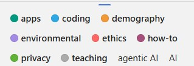

Organization, Documentation, & AI Assistance
Your project is in its early stages right now but the best way to get organized is to set things up so that you stay organized. So, before you organically accrue many project files, we’ll discuss some useful tenets of project organization and documentation (two tightly-related concepts) and how they apply to synthesis work. We’ll also discuss generative artificial intelligence (genAI), and hopefully give you some resources for how these tools work, where they can be safely used, and some considerations for when you might consider using these tools less or–potentially–not at all.
Reproducibility Best Practices Summary
Making sure that your project is reproducible requires a handful of steps before you begin, some actions during the life of the project, and then a few finishing touches when the project nears its conclusion. The following diagram may prove helpful as a coarse roadmap for how these steps might be followed in a general project setting.

Project Documentation
Much of the popular conversation around reproducibility centers on reproducibility as it pertains to code. That is definitely an important facet but before we write even a single line it is vital to consider project-wide reproducibility. “Perfect” code in a project that isn’t structured thoughtfully can still result in a project that isn’t reproducible. On the other hand, “bad” code can be made more intelligible when it is placed in a well-documented/organized project!
Documentation
Documenting a project can feel daunting but it is often not as hard as one might imagine and always well worth the effort! One simple practice you can adopt to dramatically improve the reproducibility of your project is to create a “README” file in the top-level of your project’s folder system. This file can be formatted however you’d like but generally READMEs should include:
- Project overview written in plain language
- Basic table of contents for the primary folders in your project folder
- Brief description of the file naming scheme you’ve adopted for this project.
Your project’s README becomes the ‘landing page’ for those navigating your repository and makes it easy for team members to know where documentation should go (in the README!). You may also choose to create a README file for some of the sub-folders of your project. This can be particularly valuable for your “data” folder(s) as it is an easy place to store data source/provenance information that might be overwhelming to include in the project-level README file.
Finally, you should choose a place to keep track of ideas, conversations, and decisions about the project. While you can take notes on these topics on a piece of paper, adopting a digital equivalent is often helpful because you can much more easily search a lengthy document when it is machine readable. We will discuss GitHub elsewhere in the course, but GitHub offers something called “issues” that can be a really effective place to record some of this information.
Project Organization
“Organization” is a big topic but can have serious ramifications for how well/easily you can work on a big, collaborative, synthesis project. To make this more manageable, let’s tackle project organization from the ‘top’ and work our way down to more granular facets of organization.

The simplest way of keeping a reproducible project organized is using folders and file names to effectively keep different categories of content separate. There is no single “best” way of doing this so long as you are consistent. Consistency will make your system–whatever that consists of–understandable to others.
Let’s consider some tenets of good organization that you might consider adopting!
The Project Folder
Use one folder per project! Keeping all inputs, outputs, and documentation in a single folder makes it easier to collaborate and share all project materials. Also, most programming applications (RStudio, VS Code, etc.) work best when all needed files are in the same folder.
Note that how you define “project” may affect the number of folders you need! Some synthesis projects may separate data harmonization into its own project while for others that same effort might not warrant being considered as a separate project. Similarly, you may want to make a separate folder for each manuscript your group plans on writing so that the code for each paper is kept separate.
Smart Sub-Folders
Organize content with sub-folders but keep it reasonable. Putting files that share a purpose, source, or theme into logical sub-folders is a great idea! This makes it easy to figure out where to put new content and reduces the effort of documenting project organization, because the sub-folder names are themselves partial documentation for their purpose!
However, don’t overdo it! Making an intricate maze of sub-folders is just as bad for collaborative settings as having everything loose in the top-level project folder. Just one level of sub-folders is enough for most projects. If you find yourself tempted to use deeply nested sub-folders, consider whether you’ve defined the project correctly–it could be a sign that there are really several separate, albeit related, projects at play.
Quarantine External Content
This can sound harsh, but it is often a good idea to “quarantine” files received from others until they can be carefully vetted and fit into the proper place in your organization schema. This is not at all to suggest that such contributions might be malicious!
Quarantining inputs from others gives you a chance to rename files to be consistent with the rest of your project as well as make sure that the style and content of the code also match (e.g., use or exclusion of particular packages, comment frequency and content, etc.)
Context-Rich Yet Brief Names
Balance information-density with brevity. An ideal folder/file name should give some information about the file’s contents, purpose, and relation to other project files while still being fairly short. These are definitely conflicting perogatives but trying to ‘thread the needle’ will yield better fiile names.
In your search for brevity, avoid confusing acronyms or abbreviations! It can be tempting to make your file names short by adopting bizarre abbreviations but this results in a worse (i.e., less informative) outcome than just having file names that are slightly too long.
Keep in mind too that if your folder names and order are informative, some of the information burden can be lifted from the files by themselves. For example, if you have a folder called “reports”, you could exclude that word from all the report files contained within the folder and instead emphasize report topic or date of creation.
Human-Machine Agreement
File names should be sorted by a computer and human in the same way. Computers sort files/folders alphabetically and numerically. Sorting alphabetically rarely matches the order scripts in a workflow should be run (e.g., “analysis.r” might be the top script in your GitHub repo but is unlikely to be the first step of your workflow).
For scripts, if you add a number to the start of the file indicating its order in the workflow, the computer will sort the files in an order that makes sense for humans reviewing the project. You may also want to “zero pad” numbers so that all numbers have the same number of digits and sort correctly (e.g., “01” and “10” vs. “1” and “10”).
No Special Characters
Avoid spaces and special characters. Spaces and special characters (e.g., é, ü, etc.) cause errors in some computers (particularly Windows operating systems). You can replace spaces with underscores (_) or hyphens (-) to increase machine readability. Avoid using special characters as much as possible. You should also be consistent about casing (i.e., lower vs. uppercase).
Consistent Delimiters
Be consistent with which delimiters you use and when. “Delimiter” are characters used to separate pieces of information in otherwise plain text. Underscores are a commonly-used example of this. If a file/folder name has multiple pieces of information, you can separate these with a delimiter to make them more readable to people and machines. For example, you could name a folder “coral_reef_data” which would be more readable than “coralreefdata”.
You may also want to use multiple delimiters to indicate different things. For instance, you could use underscores to differentiate categories and then use hyphens instead of spaces between words. For example, “data_coral-reef” instead of “data_coral_reef”.
Consider Slugs
Use “slugs” to connect scripts with their outputs. “Slugs” are human-readable, unique pieces of file names that are shared between files and the outputs that they create. Weird or unlikely outputs are then easily traced to the scripts that created them because of their shared slug.
For example, all outputs of a script named “02_tidy.r” should start with “02_”.
Organizing Example
These tips are all worthwhile but they can feel a little abstract without a set of files firmly in mind. Let’s consider an example synthesis project where we incrementally change the project structure to follow increasing more of the guidelines we suggest above.
Top-level sub-folders are colored blue so that the high-level structure is easier to quickly scan.
synthesis-project
|– clean-data.csv
|– community data.csv
|– graphing.r
|– ordination-plot.tiff
|– results report V2.pdf
|– results report V2.qmd
|– results_DRAFT.qmd
|– scatterplot.jpg
|– spp-boxplot.png
|– stats-feb 2024.r
|– synthesis-project.Rproj
└ - Wrangle.r
Positives
- All project files are in one folder
Areas for Improvement
- No use of sub-folders to divide logically-linked content
- File names lack key context (e.g., workflow order, inputs vs. outputs, etc.)
- Inconsistent use of delimiters/casing
synthesis-project
|– data
| |– clean-data.csv
| └ - community data.csv
|– graphs
| |– ordination-plot.tiff
| |– scatterplot.jpg
| └ - spp-boxplot.png
|– reports
| |– results report V2.pdf
| |– results report V2.qmd
| └ - results_DRAFT.qmd
|– scripts
| |– graphing.r
| |– stats-feb 2024.r
| └ - Wrangle.r
|– LICENSE
|– README.md
└ - synthesis-project.Rproj
Positives
- Sub-folders used to divide content
- Project documentation included in top level (README and license files)
Areas for Improvement
- File names still inconsistent
- File names contain different information in different order
- Mixed use of delimiters
- Mixed use of upper/lowercase
- Many file names include spaces
- Code file order not clear from filenames
synthesis-project
|– data
| |– raw-community-comp.csv
| └ - tidy-community-comp.csv
|– graphs
| |– abundance boxplot.png
| |– abundance scatter.jpg
| └ - comm ordination.tiff
|– reports
| |– results feb 14 2024.pdf
| |– results feb 14 2024.qmd
| └ - results may xx 2024.qmd
|– scripts
| |– data analysis.r
| |– data tidying.r
| └ - graphing.r
|– LICENSE
|– README.md
└ - synthesis-project.Rproj
Positives
- Most file names contain context
- Standardized use of casing and–within sub-folder–consistent delimiters used
Areas for Improvement
- Workflow order “guessable” but not explicit
- Unclear which files are inputs / outputs (and of which scripts)
synthesis-project
|– data
| |– 00_raw-community.csv
| └ - 01_tidy-community.csv
|– graphs
| |– 02_abundance boxplot.png
| |– 02_abundance scatter.jpg
| └ - 02_comm ordination.tiff
|– reports
| |– results_2024-02-14.pdf
| |– results_2024-02-14.qmd
| └ - results_2024-05-xx.qmd
|– scripts
| |– 01_tidy.r
| |– 02_graph.r
| └ - 03_analyze.r
|– LICENSE
|– README.md
└ - synthesis-project.Rproj
Positives
- Scripts include zero-padded numbers indicating order of operations
- Outputs share zero padded slug with source script
- Report file names machine sorted from least to most recent (top to bottom)
Areas for Improvement
- Could add subfolder-specific README files
- Depends on complexity of respective subfolder
- Graph file names still include spaces
Responsibly Using Generative AI
Parts of the content in this topic were adapted from the National Center for Ecological Analysis and Synthesis (NCEAS) Learning Hub’s 2026 workshop to the Delta Stewardship Council. Those materials can be found at nceas-learning-hub.github.io/2026_delta_week2.
Generative AI (hereafter “genAI”) has become increasingly broadly-discussed and adopted in the sciences. As with any other flexible tool, there are a variety of opinions and use-cases. The goal of this component of this lesson is not to provide comprehensive coverage for the entirety of genAI, rather the goal here is to give you a starting point for thinking about genAI and deciding whether/how you’d like to use these tools. We are by no means experts in the design and application of AI, we are just curious and excited (and sometimes apprehensive) about the possibilities these new tools offer.
Big Picture
GenAI results are probabilistic rather than deterministic. The same exact prompt is not guaranteed to return the same result. This means that genAI results are not reproducible (i.e., cannot be guaranteed to return the same output from the same inputs) so should be used with caution when reproducibility is a priority. However, you might ask a genAI tool to help you generate code to analyse your data that you can review, modify, save and rerun.
Whether and how to use genAI for these projects is something your team will need to decide on collaboratively. The potential applications and drawbacks described below–or that you’ve encountered in your own work–may provide helpful context for that converation but the key point is that you do discuss this as a group and reach a shared understanding and plan of action that everyone on the team is comfortable with.
Finally, note that you have a professional obligation to verify and validate GenAI output This requires some fundamental understanding of the task so that you can provide adequate human oversight. Remember that the same truism that applies to non-AI coding also applies here: the worst case isn’t that your code gets an error, it’s that your code appears to work but does not actually do what you intend!
AI Use-Cases
There are a handful of particularly well-recognized potential use-cases for genAI in a typical researchers toolkit. A non-exhaustive set of these is included below.
Many video conference platforms (e.g., Microsoft Teams, Zoom) now include AI components that take meeting notes and may even provide executive summaries of key points and/or action items.
Most general purpose chatbots can do basic research when prompted. But, all AI tools reflect the biases in their training sets and have a strong tendency for sycophancy as a result of model training that rewards agreeableness. As a result, AI adoption narrows the diversity of research topics pursued (Hao et al. 2026) and AI chatbots tend to support rather than challenge user’s views (Naddaf 2025). While general purpose AI tools often ‘hallucinate’ scientific publications, those which retrieve information from curated databases of scientific papers may help researchers discover new papers more effectively than traditional search. Specialized genAI tools are being developed for literature search and scientific brainstorming that reduct the tendency to fabricate references. If you are interested in experimenting with tools such as Consensus, a commercial application or Asta a non-profit alternative, evaluate the outputs with the potential impact on critical thinking(#learning-and-critical-thinking) in mind. In sum, use genAI to supplement, rather than replace, the bright minds around you.
While most people would consider using AI to write a scientific paper in its entirety unethical, there is often a fuzzy line between using AI to help with editing versus writing. For example, you might use AI as a thesaurus, to provide suggestions on how to improve clarity on a sentence or paragraph, to correct grammar or help with syntax when writing in a second language. In July 2026, ~190 organizations signed onto the Code of Practice on Transparency of AI-generated Content, and AI companies have begun watermarking AI-generated text in an effort to reduce the use of undisclosed AI across many domains, including scientific writing (Gibney 2026).
From writing original code, debugging or reviewing code, refactoring code you’ve already written to run more efficiently or translating between coding languages, AI coding assistants can be incredibly valuable for speeding up the process. At the same time, vetting the output of AI generated code is essential, and doing so effectively requires the subject matter expertise to define appropriate goals, understand the code and set up effective testing strategies.
The sycophantic tendencies also provide challenges for integrating AI into data science tasks, where LLMs have been documented to ‘see’ what they expect to see (Couch and Altman 2025). The confident ‘tone’ of AI responses can mask underlying uncertainties in analytical tasks. A recent evaluation in fisheries modeling specifically concluded the AI agents reliably write functional code, but not necessarily scientifically accurate code (Brown et al. 2026)
If you’re new to statistics, coding or new to a particular language, we encourage you to invest some time in the desirable difficulties of learning. This likely involves working through some basic material without relying on AI to simply write the code for you, and experiencing some frustrating code failure along the way. You may also consider using AI as a learning tool, explaining code written by others.
Flavors of AI Coding Tools
There are a few different ways with which you can engage genAI tools. The costs and benefits in terms of speed and human control tend to be inversely related, with the degree of human-in-the-loop interaction decreasing as you move to increasingly agentic tools, which work more independently, and faster. Consider which is the best fit for your needs as you work.
Perhaps the easiest entry to genAI coding tools is to use your web browser navigate to chatbot of your choosing and prompt it for help generating or editing code. After vetting the code it produces, you can then copy and paste in onto your local machine to run. Prompts can take the form of “pseudocode”, where you describe what you wish to achieve using natural language, or you can copy actual code, console outputs, or upload (small) files to get increasingly specific help.
You can use genAI as an assistant that is directly tied into your IDE (Integrated Development Environment, such as R Studio, Positron, or VS Code) that essentially looks over your shoulder and suggests code as you are writing it or provides a chat window right in your IDE that can answer questions, edit and write code. The advantage of the “pair programming” model is that the LLM understands the context of your project, which can help you iterate more efficiently. A variety of tools are available for this. Some example include Positron’s ‘Posit Assistant’, or any number of plugins for IDEs such as Visual Studio Code. Some plugins are tied to a particular model provider (e.g.commercial ones such as GitHub Copilot, Claude Code, Codex), others such as Zoo (formerly Roo) and Cline code allow you to bring your own key, decoupling the harness (the software that allows you to interact with a particular LLM) from the model provider itself.
Fully agentic coding moves from synchronous interactions to asynchronous interactions. Researchers typically develop a detailed plan and then hand off the plan to the agent to iterate independently until the task is completed. Mistakes may be harder to catch because of the volume of generated code to review, but the rate of code development is typically faster. Because of the increased risks associated with decreasing human oversight, we recommend only using fully agentic mode in a sandboxed environment, ideally virtual machine, that has no access to sensitive data or confidential information and to give careful thought to how you will test and verify outputs.
AI Drawbacks
The purpose of this section is just to briefly touch on some drawbacks of generative AI (at time of writing), not to provide an exhaustive review on this topic. If you choose to engage with AI tools, consider doing your own due diligence prior to making a decision in general or for a particular project.
There is an inherent tension between the ease with which a task can be accomplished and its value to learning. The concept of desirable difficulties describes learning activities that require more effort and take more time, but lead to deeper learning and better retention (Bjork 1994). Using generative AI may allows you to complete a task quickly but come with a cost to development of critical thinking skills, memory, and neural connections in your brain (Kosmyna 2025). In this course, we challenge you to think about what skills you want to develop and invest the time and effort to do those tasks without the assistance of genAI. Other tasks you may be happy offloading on an AI assistant, but do so with awareness of the impacts on your own learning.
Agents run on your machine generally inherit the permissions of the user who is logged in. This allows them do anything you can do, including reading, modifying and deleting files, accessing the web, installing software, and executing code. Access to your private data, exposure to untrusted content and ability to externally communicate (aka the ‘[lethal trifecta[(https://simonwillison.net/2025/Jun/16/the-lethal-trifecta/)]’) make agentic coding particularly dangerous. Agents may install malicious code or follow nefarious instructions hidden on a website, such as instructions to reveal confidential information. The safest option for using agents is working in a sandbox completely isolated from your computer, such as a virtual machine. Next best is to review and approve any actions taken by an AI agent, including always reviewing code written by agents before executing it.
Using AI directly and substantively contributes to climate change (Programme 2024).
Data Centers – Data centers are power- and water-hungry, as well as noisy. In 2025, AI-focused data centers consumed 0.5% of the world’s electricity in 2025, a number which is projected to grow to 3% by 2030 (Ritchie 2026). Large data centers may use 1-5 million gallons of water a day, comparable to the daily water usage of a town of 10-50,000 people (Osaka 2023). Their environmental impacts in terms of pollution, energy and water costs, and public health are unevenly distributed across the country, with disparate impacts often accumulating in underserved communities (Bharath 2026).
AI Queries – A ChatGPT query uses about 5 times the energy of an equivalent web search (Zewe 2025). A 100-word email written by ChatGPT (GPT-4) uses 519 mL (17.6 oz) of water–about equivalent to a single-use water bottle (Verma and Tan 2024). But to put these numbers in context, the environmental cost of a typical chatbot query is ~ 1/150,000th of the average American’s daily carbon and 1/800,00th of the average American’s daily water footprint. much as the average Americans daily water footprint (Masley 2025)
AI Agents – Agentic AI tasks consume orders of magnitude more than a short chat. Heavy agentic AI use is where the electricity consumption becomes more environmentally significant, on the order of the each person-day of AI use similar to running a fridge, or a couple of fridges all day long (Hausfather 2026).
GenAI tools are/were trained on all publicly-available information (in many cases, regardless of license or copyright status) and on users’ ongoing interactions with these tools. Keep in mind that the the original content used to train the models was used without consent, attribution, or compensation for the creators (Appel et al. 2023) and include that in your decision-making process for whether/how to use these tools.
If you use these tools, be sure to check the privacy settings to ensure that you are comfortable with how your interactions are used to train the model you’re using. Most commercial genAI tools default to a setting where they collect your inputs to improve the model, but many of them allow you to opt out. Privacy settings also change over time, so pay attention to communications from your AI model provider. Running a model locally (e.g. on your laptop), or on computing resources provided by your institution can also ameliorate some privacy concerns. Research projects that rely on sensitive data (e.g., Human Subjects research, Indigenous data) require additional guardrails and as a rule should not be used in any commercial AI application.
If the information going into a model is inaccurate, biased, fabricated, etc., the product will be inaccurate, biased, or fabricated. AI suffers from a range of biases (Nazer 2023). GenAI used in hiring decisions is particularly problematic as it reflects the biases built into current hiring pools and industry demographics. Amazon had to scrap its AI-hiring tool after finding it penalized resumes including the word “women” (Dastin 2018).
Access to generative AI tools differs among institutions, regions and with economic resources. Learning and training opportunities are also highly variable (Freed 2026). We will work with students in this course to ensure equitable access for the duration of the class. Use them to understand what is possible, but remember that depending on your professional trajectory, the whims of your institutions higher ups and/or the tech vendors providing commercial AI tools – you may or may not have access to similar tools in the future.
AI Disclosure and Tracking
However you choose to use AI, it’s expected that AI contributions to scientific research be disclosed at the time of publication. A few frameworks for categorizing and reporting AI use in scientific publications have emerged (Ahmetoglu et al. 2026; Suchikova et al. 2026), but whatever disclosure statement you eventually write will require remembering what you actually did. This can be challenging when a project has evolved over months to years, due to difficulty in recalling content source (aka “the AI Memory Gap” (Zindulka et al. 2025)). When interacting with a chatbot, take a moment at the end of your session to ask the chatbot to summarize the task, platform, and date. We have provided some templates. For agentic coding exercises, you might consider setting up a self-documenting workflow, such as instructing your agent to regularly update a prompt action log (example here).
Learn More
The field of genAI is moving rapidly. While we have attempted to compile contemporary resources at the time of writing, they are likely to evolve over the course of the semester. As well, many citations rely on blog posts and preprints, which may not be persistent. If you’re looking for current information, ESIIL’s AI-in-a-Day working group is loosely curating a Zotero library of AI-related articles of relevance to environmental scientists. Use the colored tags to filter (see example on the right) and sort by date to find something recent that suits your interests.
